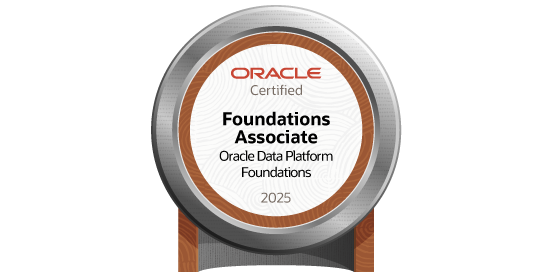
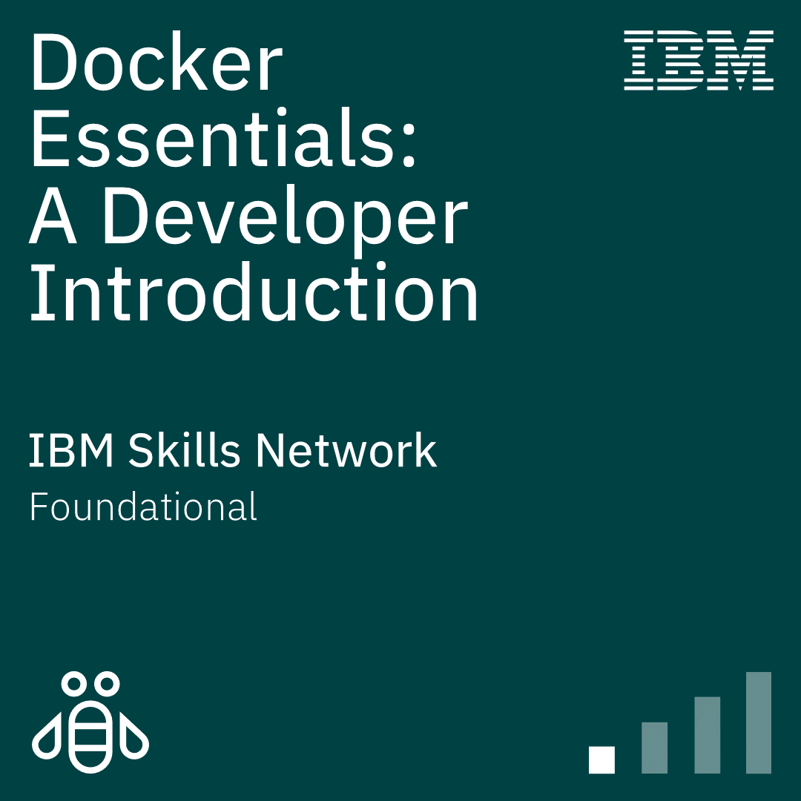
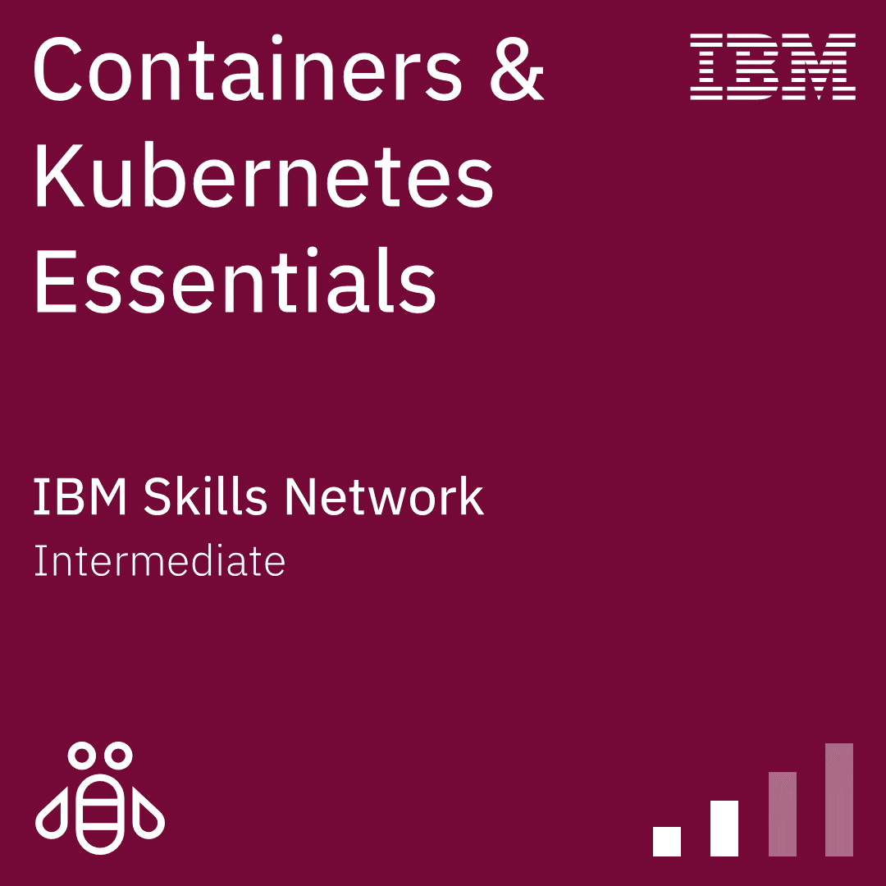

WILLIAN
DINIZ
MENEZES
Especialista em AWS Serverless e IaC.
+5 anos em Gestão de Projetos agora aplicados a Cloud Operations.
Arquiteturas de alta disponibilidade e escala enterprise.
GESTÃO DE PROJETOS
5 anos liderando iniciativas complexas, focando em otimização de custos e eficiência operacional. Hoje, traduzo essa visão estratégica para a governança de infraestrutura em nuvem (FinOps).
AWS RE/START + IA
Participante do programa AWS Cloud re/Start com foco em IA. Imersão profunda em Cloud Operations, segurança e automação para entrega contínua.
INFRA AS CODE
Especialização em CloudFormation e Terraform. Construção de ambientes resilientes, utilizando S3, CloudFront, Route 53 e Lambda para arquiteturas Serverless.
SKILLS
// CLOUD & AWS
- > AWS CloudFormation (IaC)
- > Amazon S3 & CloudFront (CDN)
- > Route 53 & ACM (Security)
- > AWS Lambda & API Gateway
- > Amazon EC2 & Auto Scaling
- > CloudWatch & SNS
- > Oracle Cloud Infrastructure (OCI)
- > OCI Artificial Intelligence (AI)
- > OCI Data Management
// DEVOPS & IaC
- > Terraform & Ansible
- > Docker & Amazon ECR
- > CI/CD: CodePipeline & CodeBuild
- > GitHub Actions
- > Linux (Alpine/Ubuntu)
- > FinOps & Cost Management
// DEVELOPMENT
- > Java & Spring Boot
- > REST API Architecture
- > Amazon DynamoDB (NoSQL)
- > Git & Version Control
- > Clean Code & Design Patterns
- > Jenkins Pipelines
CERTIFICADOS
AWS CLOUD PRACTITIONER (CLF-C02)
CONCLUÍDO // MAR-2026Conhecimentos fundamentais da nuvem AWS: serviços principais, segurança, arquitetura, precificação e suporte.
OCI FOUNDATIONS ASSOCIATE (2025)
CONCLUÍDO // MAR-2026Fundamentos de nuvem pública Oracle: serviços principais, segurança, arquitetura e governança, validando competências para soluções em OCI.
OCI AI FOUNDATIONS ASSOCIATE (2025)
CONCLUÍDO // MAR-2026Certificação em IA e Machine Learning na Oracle Cloud. Foco em conceitos fundamentais, aplicações práticas e serviços de IA da infraestrutura OCI.

OCI DATA PLATFORM ASSOCIATE (2025)
CONCLUÍDO // ABR-2026Certificação em fundamentos de gestão de dados na Oracle Cloud. Abrange serviços core de Data Management, arquitetura e soluções de dados em nuvem.

DOCKER ESSENTIALS: A DEVELOPER INTRODUCTION
CONCLUÍDO // MAR-2026Experiência com containers Docker: execução, criação, orquestração básica e boas práticas em DockerFiles.

CONTAINERS & KUBERNETES ESSENTIALS
CONCLUÍDO // MAR-2026Arquitetura Kubernetes: Deployments YAML, Services, ReplicaSets, Auto-scaling, Rolling updates e OpenShift.
ORACLE NEXT EDUCATION (ONE) + ALURA
CONCLUÍDO // 456HTrilhas completas em Java, Spring Boot 3, Front-end (HTML/CSS/JS), IA Generativa e Soft Skills (ONE G9).
PORTFÓLIO
INFRA CLOUD CI/CD
Pipeline automatizado com CloudFormation, CodePipeline e CloudFront. Arquitetura serverless de alta performance.
VIEW SOURCE _DEVOPS LAB
Cluster Docker otimizado com Alpine Linux em instâncias EC2 gerenciadas via CLI.
VIEW SOURCE _CONVERSOR DE MOEDAS
Aplicação Java de console com integração a API REST para câmbio em tempo real. Foco em POO e consumo de APIs externas.
VIEW SOURCE _CADASTRO PET SHOP
Sistema de gerenciamento robusto com persistência de dados JSON. Implementação profunda de lógica de negócios em Java.
VIEW SOURCE _